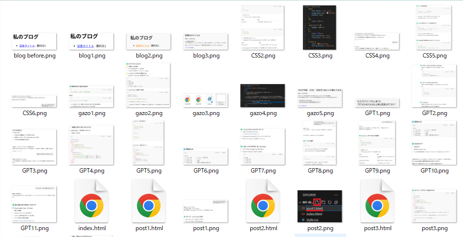
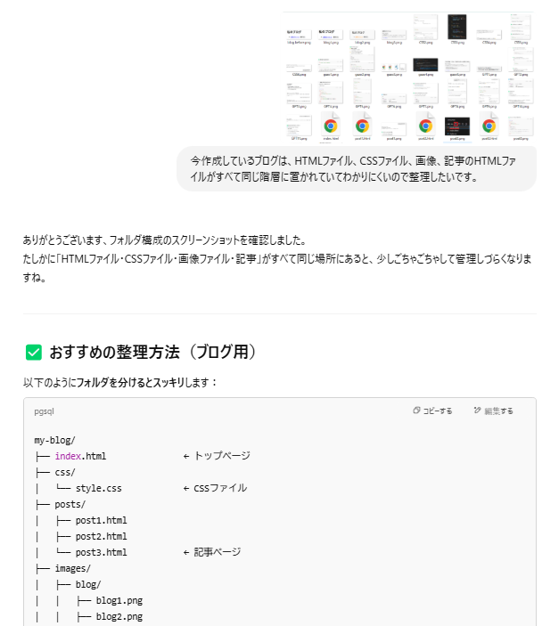
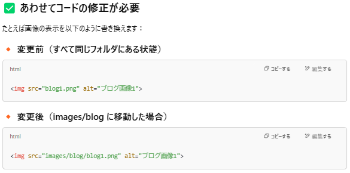
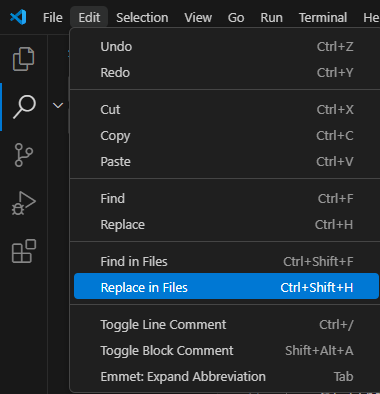
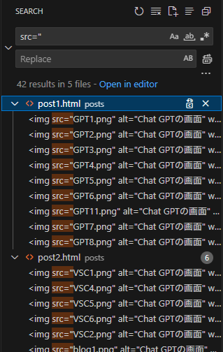
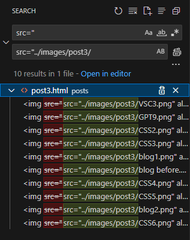
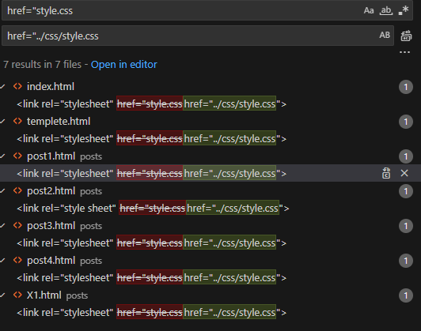
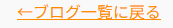

カテゴリ:ブログ作成～公開まで～
投稿日：2025年5月7日
今回はHTMLなどを置いているフォルダがめちゃくちゃになってきたので整理します。
恐らくほとんどの人は躓かないポイントなので寄り道編としました。
まず今のフォルダ内がどうなっているかというと
めっっっっちゃくちゃ。
index.htmlやstyle.cssはもちろん、画像や記事ファイルまで一緒になってぐちゃぐちゃなのでフォルダに格納したいです。
早速Chat GPTに現在の状況を画像で報告。フォルダを整理したいと伝えました。
すると画像からファイル名を種類を読み取り、フォルダ階層の提案までしてくれました。
提案通りにフォルダを設置し、ファイルを振り分けました。
記事内で使用していた画像の場所が変わったので、各記事の画像指定コードも変更する必要があるようです。
上の階層であるmy-blog内のフォルダを参照しているみたいですが、現在編集している記事のHTMLファイルはpostsフォルダの中にあります。
なんかうまくいかなそうですがやってみましょう！
VSCに置き換え機能があるのでそちらを利用します。
上のメニューからEdit内のReplace on Filesをクリック。
するとこのような画面が出てくるので、src="と入力。
VSCで開いているフォルダ内全てに検索がかかっているようなので、post1.html以外を、ファイル名右の×ボタンで対象から外します。
外したら置き換え欄にGPTの指示通りになるよう入力して置き換えます。
するとどうでしょう。見事に表示されません。Chat GPTにフォルダ階層とコードを貼り付けて質問してみます。
見切れていますが画像外上にはフォルダの階層がずらーっと書かれています。
階層を伝えるときにフォルダ階層の取得のしかたもChat GPTに教えてもらったので別記事で書きます。
my-blog内のHTMLファイルでコードを書いていると認識していたみたいです。そらそうか。
コードからpost1.htmlでコードを書いていることを汲み取ってくれて、解説と修正方法も出してくれました。
上の階層から指定したい場合は../を使えばいい見たいですね！なんか見たことある！
早速修正しましょう。
post1.htmlだけ変更したので今回の修正もpost1.htmlだけになるようにします。
imagesの手前に../を追加します。
あとは記事ごとに修正したファイルパスを置き換えて終わり。
ついでにCSSファイルの指定も修正しましょう！
CSSファイルはあまりいじっていないので変化がわかりにくいです。
リンクにマウスカーソルを合わせるとオレンジ色になるはずなのでそれで確認します。
青！！適用されてませんね！！！修正しましょう。
まずは置き換えを開いて、CSSファイルをしているコードをコピーして検索します。
するとすべてのHTMLファイルがリストにでてきますので、ここで修正版のコードを打ち込みます。
変更前と変更後が色分けされていて、一文全て表示されるので分かりやすいですね！
早速確認してみましょう。
オレンジ！！！無事適用されました！！！
これにてフォルダ整理を終わります。
恐らく参考書や動画、ブログなどで教わる場合は最初にフォルダの配置なども教えてくれると思うのですが、Chat GPTはやりたいことに対して最短で教えてくれるので今回のような問題はこの先も起こりそうな気がしました。